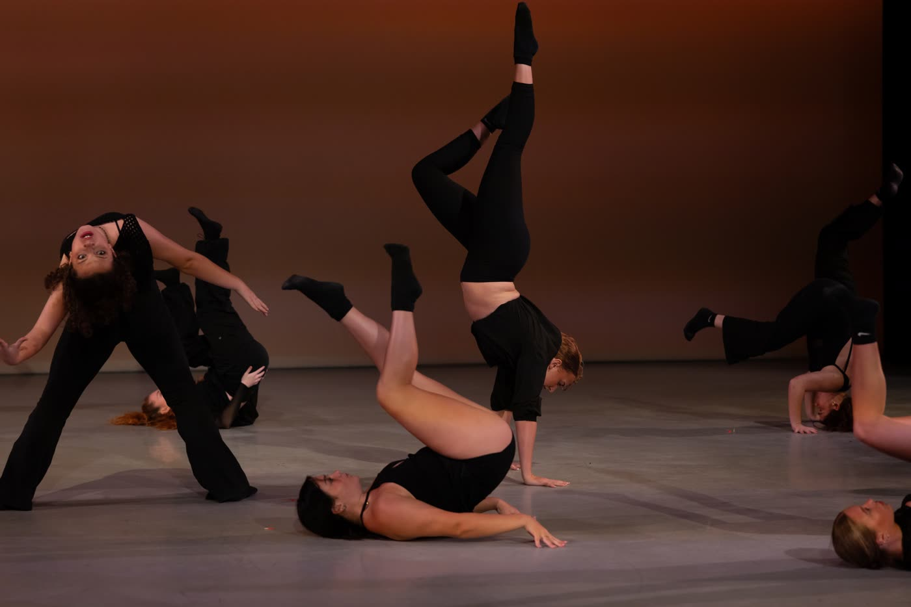

and we begin in 5, 6, 7, 8
This isn’t a studio.
It’s a company.
Elite youth training, ages 5 to 19. An adult modern company, 18 and up. Every class and every piece from one working director. Built from scratch in Orlando.
placement still open,
all three tracks.
Earn your spot.
Three tracks: Prep, Elite, Pro. Audition-based, and every class designed by a working director. Auditions wrapped in June. Placement is open in all three tracks, and Dixon personally reaches out to every family who expresses interest.
every track capped at ten.
small on purpose. spacing matters.
PREP
ages 5 to 8 · the foundation years
Technique, musicality, first stage time.
Placement open
ELITE
ages 8 to 12 · the building years
Full competition season with the full faculty rotation.
Placement open
PRO
ages 12+ · the proving years
Advanced choreography and title-track entries.
Placement open
Registration is $50, once. Costume and competition fees bill monthly as deposits against the season’s real total. You start paying it down from day one, and the final balance settles when costumes are ordered and the comp slate locks.
Apply for placement →More than a drop-in class.
An adult modern company, about fifteen dancers, rehearsing by project across Orlando. Real technique, real choreography, real stage time. No audition. Just show up ready to move.

That was full out.
Five days at Exchange Dance Academy. Eight styles, five faculty, twenty-three awards on the last day. Season One is a full season of this: August through May, all three tracks.
the daily reels live
on @dwdproseries.
Every class. Every piece.
Seventeen years inside youth and professional dance. Dixon built DWD so families get a working director, not a franchise. Every class designed by him. Every piece set by him or faculty he chose.
- Disney Jr. Live · national tour
- Professional company · NYC
- Fly Dance Competition · tour director
- Adjunct professor of Jazz · UVU
- ADCC Studio of Excellence
- Groove · Inferno
- Tremaine · StarQuest
Upstage center is marked, and it stays marked.
For Tamara.
There is
still room.
Season One begins August 10, and placement is open in all three tracks. Tell us about your dancer, and Dixon will reach out personally.